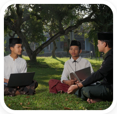
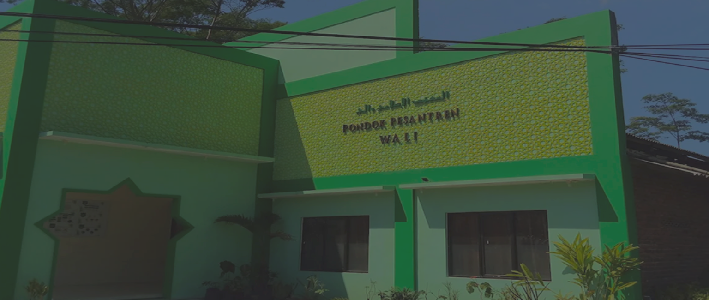
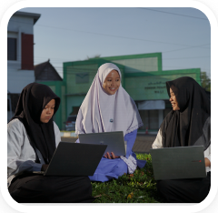
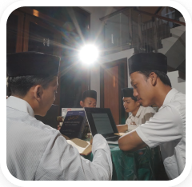
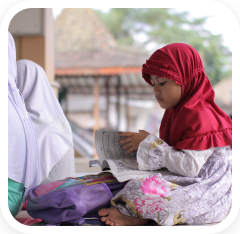
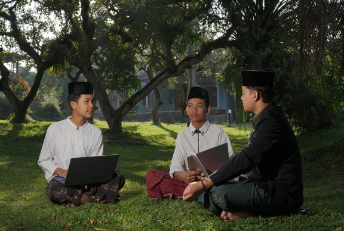
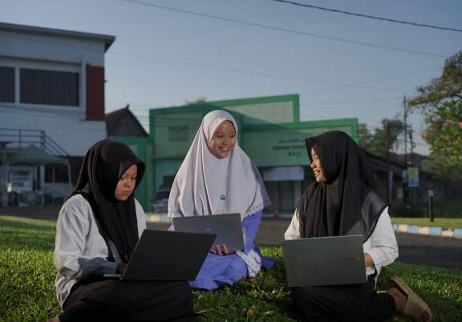
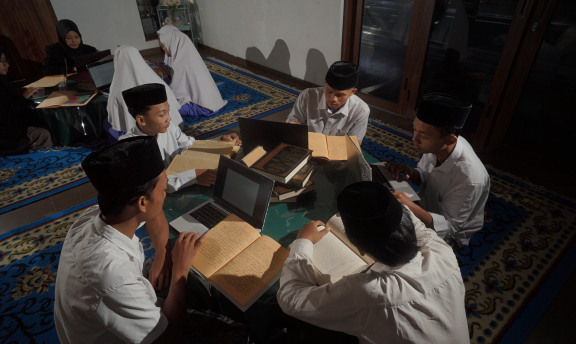
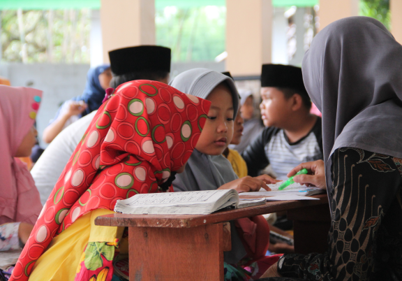

Jenjang Menengah
Kulliyyatul Mu'allimin al-Islamiyah (KMI)
Program pendidikan klasikal tingkat menengah berstandar Pondok Modern Gontor yang terintegrasi penuh dengan Madrasah Diniyah WALI.


Beradab, Berkitab, Digital
Selamat datang di direktori pusat informasi dan profil unit pendidikan Pondok Pesantren WALI. Temukan informasi lengkap mengenai jenjang belajar, kurikulum, serta kelompok warga belajar kami di sini.
Kunjungi portal utama Pondok Pesantren WALI untuk informasi kelembagaan lengkap dan artikel keislaman
Pondok Pesantren WALI (Wakaf Literasi Islam Indonesia) memadukan khazanah keilmuan klasik Islam dengan kecakapan teknologi kontemporer.
Berpusat di Tuntang, Kabupaten Semarang, Pesantren WALI membina santri melalui integrasi keteguhan sanad keilmuan, adab harian, literasi siber, dan jiwa kemandirian ekonomi. Melalui ekosistem terpadu, santri dibimbing menguasai teks kitab kuning klasik sekaligus terampil memanfaatkan ruang digital untuk syiar dakwah yang bermartabat[cite: 10].
"Menyiapkan generasi santri yang kokoh secara spiritual, matang secara intelektual, dan adaptif terhadap kemajuan era digital."
Menegakkan budi pekerti luhur, keteladanan moral, dan integritas akhlak karimah dalam keseharian kehidupan asrama.
Mendalami referensi turats kuning Ahlussunnah wal Jama'ah secara runtut, mendalam, dan bersanad tuntas.
Mengasah kecakapan teknologi informasi untuk produksi konten dakwah siber yang kreatif, etis, dan mencerahkan.
Pilih unit untuk melihat rincian kurikulum, durasi studi, dan kapasitas kuota santri.
Program pendidikan klasikal tingkat menengah berstandar Pondok Modern Gontor yang terintegrasi penuh dengan Madrasah Diniyah WALI.

Mengusung filosofi "The Santri-Tech Way" yang memadukan kajian kitab turats kuning klasik dengan praktik produksi dakwah siber kreatif.

Pendalaman keagamaan Ahlussunnah wal Jamaah, keterlibatan aktif dalam unit bisnis produktif, serta program pengabdian masyarakat.

Pendidikan dasar membaca dan menghafal Al-Qur’an menggunakan Metode WALI interaktif, pembiasaan adab harian, serta kelas pra-literasi digital.


KMI merupakan program pendidikan klasikal tingkat menengah berstandar pesantren modern yang ditempuh selama 4 hingga 6 tahun. Kurikulum dirancang secara terpadu untuk mengintegrasikan penguasaan ilmu-ilmu keislaman klasik (turats), penguatan bahasa asing (Arab dan Inggris), serta kesiapan literasi digital. Program ini mengadopsi sistem pembinaan disiplin berasrama penuh (boarding school) yang dikombinasikan dengan penguatan keterampilan praktis melalui Madrasah Diniyah WALI.

Mengusung filosofi utama "Beradab, Berkitab, Berdigital" (The Santri-Tech Way), program ini memadukan metode pembelajaran kajian kitab kuning klasik secara mendalam dengan praktik nyata produksi konten dakwah siber yang kreatif, etis, dan mencerahkan. Santri tidak hanya dibekali pemahaman dalil dan hukum Islam yang mapan, tetapi juga dilatih kecakapan teknologi informasi agar mampu berdakwah di era digital.

Dirancang khusus bagi mahasiswa perguruan tinggi yang ingin mendalami pemahaman keagamaan berhaluan Ahlussunnah wal Jamaah di tengah kesibukan kuliah formal mereka. Program ini menyeimbangkan antara kecerdasan intelektual kampus dan kematangan spiritual pesantren, serta melibatkan santri secara aktif dalam unit-unit bisnis produktif pesantren dan program pengabdian nyata kepada masyarakat luas.

Pusat pendidikan dasar Al-Qur’an yang diperuntukkan bagi anak-anak hingga masyarakat umum menggunakan Metode WALI yang interaktif dan mudah dipahami. Pembelajaran tidak hanya fokus pada ketepatan membaca dan menghafal tartil Al-Qur'an, tetapi juga diiringi dengan pembiasaan adab harian islami serta kelas pengenalan pra-literasi berbasis digital sejak dini.